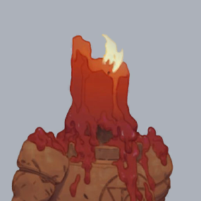

DEADLOCK COMPANION
SOUL LAB
FARM VALUE
SOULS PER CLEAR

LANE TROOPERLANE ECONOMY
POTENTIAL SOULS / MIN
One lane · four Troopers per wave · every orb secured · before sharing. Supply rate, not guaranteed personal income.
READ THE CURVES
AT A GLANCE
In one item category, not total net worth. Weapon +46% damage · Vitality +38% health · Spirit +38 power.
Investment table ↗FORMULAS, SOURCES & ASSUMPTIONS CHECKED OCT 12, 2026
Reward curves
Let t = match minutes. Trooper: 100 + 2t. A normal wave has 4. Normal box: 23 + 2t per drop, with 60% drop chance. Sinner’s: 310 + 3.35t for a whole machine. Expected 10-box yield = 10 × 0.6 × (23 + 2t).
Scaling begins at match start. Normal boxes first appear at 3:00; Sinner’s at 8:00. Curves are continuous approximations; the game may round individual payouts.
What is not included
No soul sharing, denies, super Troopers, Rift Troopers, tough crates, nearby haunts, travel/clear time, or Sinner’s permanent buffs. Boxes and Sinner’s grant unsecured/haunted souls. A run means ten ordinary boxes; the default shows an average, not a guarantee.
Four-Trooper wave composition · Spawn times and wave intervals
Milestones, not predictions
Ability thresholds: ultimate unlock at 3,800 total souls; first possible maxed ability at 6,600 (8 AP all spent on one ability). These apply to all heroes, but are not equally important to every build.
For item/investment targets, earlier spending is a user-adjustable assumption. Item prices include components. No selling, unspent cash, or purchase delay is modeled. The pace is constant; shaded ranges use ±20% income, not match statistics.
Guide coverage
All 44 roster heroes have shared milestones. Nine have a selected, linked Mobalytics author-build milestone. Older guide dates stay visible; this is not a current-patch tier list. The remaining heroes, including newly released heroes, have no invented build-specific spike.
The guide identifies the milestone; this page estimates its time. Change earlier spending for late-game targets and use a custom target for your own build. Game and guide data are a dated snapshot, not automatically refreshed.